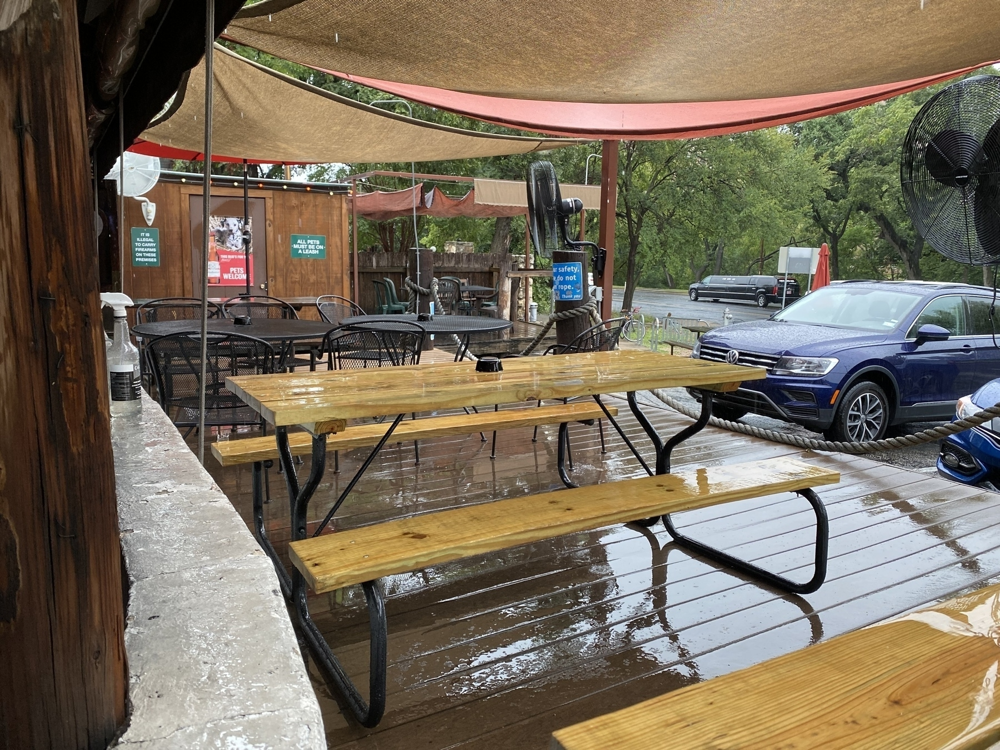

📚I have a stack of unread Important and Impressive books, but I think I’m going to read a children’s book: Howl’s Moving Castle.
⚽️It’s another Austin FC home match I’m going to miss because I don’t want to crowd into a stadium during a COVID surge.
I know it makes me a suburban cliché, but the gas-powered yard service is really putting an edge on my Saturday morning.
Set up cross posting between Twitter and micro.blog. I’ll be trying out micro.blog exclusively for a while.
Is Micro.blog better, or just smaller?
I have two immediate reactions to micro.blog. The first is that it is a friendly and inviting. It feel less confrontational than the blue bird. It doesn’t feel like people are trying to score points by dunking on others. The other reaction is that it feels smaller. I don’t accidently encounter people talking about, say, Austin FC, or transportation planning.
Are the two related? Is it still an insular little community? What would it feel like if all the same micro-communities came over from the larger social media sites? Would I find those people as easily? What about if the trolls and bad actors arrived? Would it feel as suffocating and soul-sucking as the blue bird?
Ulysses’ greatest strength is its greatest weakness: the internal document database. Yes, it keeps documents together instead of littering my filesystem. It also makes Ulysses a silo. One advantage of markdown is that any program can edit it. Ulysses loses that.
It’s match day for Austin FC. I’m not sure I want to stand in a crowd of 20K and scream for 90 minutes.
On the topic of writing tools, it looks like Ulysses supports micro.blog. As luck would have it, I cancelled my Ulysses subscription because I never used it. Maybe time to try again?
I kind of want to write with BBEdit. I like micro.blog, and I appreciate that the backend is a static site, but it still requires blog tools, instead of writing tools.
We started out planning for a picnic at Waterloo Greenway, ended up spending a rainy day at the Crown.

I updated my micro.blog theme, and now the highlighting is somewhat better. I’m not a fan of the dark mode syntax on a light mode page, but whatever. The good news is that the syntax is highlighted using CSS classes. The bad news is that it doesn’t appear to support Swift syntax.
Update: the next step is not screwing around with domain names. The next step is to write a bunch of stuff and see how it shakes out, how it feels. Most notably: Does micro.blog result in more writing? If so, then I can work around anything else.
Syntax Highlighting in micro.blog
I give micro.blog a C- on code formatting. The code block is monospace, but has no highlighting applied. The code block is wrapped in <pre> and <code>, with the language captured as a class within code. That’s enough to get a javascript syntax highlighter to work, but I’m of the firm opinion that syntax highlighting should be a server-side operation. The lexer should wrap each language token in a CSS class, and let a stylesheet colorize the syntax.
I wonder how code formatting works? Here are a couple of samples:
#import <Foundation/Foundation.h>
int main(int argc, char* argv[]) {
for (NSInteger i=1; I <= 101; i++) {
if (i % 15 == 0) {
NSLog(@"FizzBuzz\n");
} else if (i % 3 == 0) {
NSLog(@"Fizz\n");
} else if (i % 5 == 0) {
NSLog(@"Buzz\n");
} else {
NSLog(@"%li\n", i);
}
}
}
And Swift:
for i in 1...100 {
switch (i % 3, i % 5) {
case (0, 0):
print("FizzBuzz")
case (0, _):
print("Fizz")
case (_, 0):
print("Buzz")
default:
print(i)
}
}
A post with a photo: the Austin FC supporters section.

Note: not my photo. I’m in that crowd somewhere.
The next step for my micro blog is a custom domain. But do I add a micro.brokaw.org domain, or replace my Wordpress site currently at steven.brokaw.org?
The new post seems to have overwritten my earlier posts. Luckily, they were just test posts from 2017.
Another Try at micro.blog
I (re-)subscribed to a paid micro.blog acount. I got a couple of free trials for supporting the kickstarter, but it never clicked. I’m back to give it another try.
The thing that brought me back is the way the micro posts and full blog posts are intermixed on the blog page. The looks and works the way I want. I never got my WordPress site working how I really wanted. I was hoping somebody would write a book (cough, cough) that might address how to self-host a similar site. At any rate, I’m happy to pay for a hosted solution, as long as it does what I want, and it seems like micro.blog now does what I want.